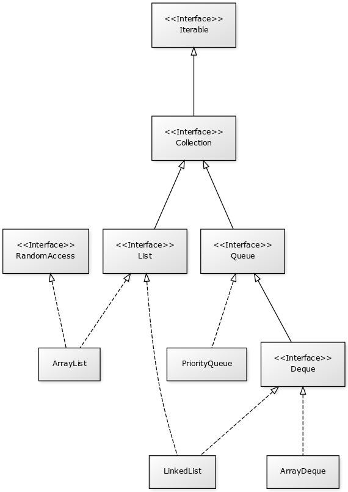
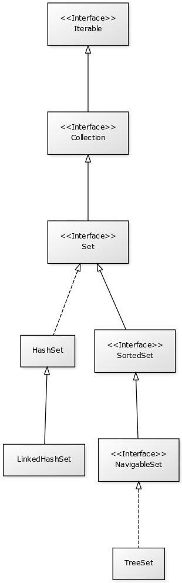
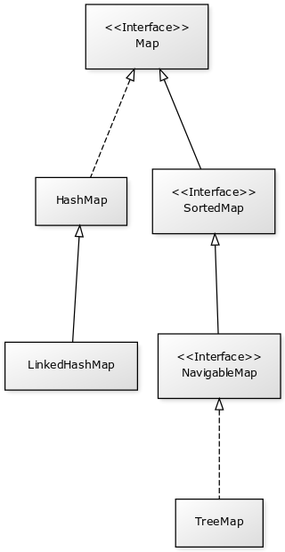

Les collections¶
Lors d’un chapitre précédent, nous avons vu qu’il est possible de déclarer des tableaux en Java pour gérer un ensemble d’éléments. Cependant, ce type de structure reste limité : un tableau a une taille fixe (il est impossible d’ajouter ou d’enlever des éléments d’un tableau). De plus, il est souvent utile de disposer d’autres structures de données pour gérer des groupes d’éléments.
On appelle collections un ensemble de classes et d’interfaces fournies par l’API standard et disponibles pour la plupart dans le package java.util. Parmi ces collections, on trouve les listes (lists), les ensembles (sets) et les tableaux associatifs (maps). Elles forment ce que l’on appelle le Java Collections Framework.
Toutes ces classes et interfaces sont génériques. Il n’est donc possible que de créer des collections d’objets. Si vous souhaitez créer une collection pour un type primitif, vous devez utiliser la classe enveloppe correspondante (par exemple Integer pour int).
Les listes¶
Une liste est une collection ordonnée d’éléments. Il existe différentes façons d’implémenter des listes selon que l’on veut privilégier les performances pour les accès aléatoires aux éléments ou les opérations d’insertion et de suppression d’éléments dans la liste.
Java propose plusieurs classes d’implémentation pour les listes selon les besoins de performance. Comme toutes ces classes implémentent des interfaces communes, il est conseillé de manipuler les instances de ces classes uniquement à travers des variables du type de l’interface adaptée : Collection, List, Queue ou Deque.
L’interface Collection dont hérite toutes les autres interfaces pour les listes, hérite elle-même de Iterable. Cela signifie que toutes les classes et toutes les interfaces servant à représenter des listes dans le Java Collections Framework peuvent être parcourues avec une structure de for amélioré (foreach).
La classe ArrayList¶
La classe java.util.ArrayList est une implémentation de l’interface List. Elle stocke les éléments de la liste sous la forme de blocs en mémoire. Cela signifie que la classe ArrayList est très performante pour les accès aléatoire en lecture aux éléments de la liste. Par contre, les opérations d’ajout et de suppression d’un élement se font en temps linéaire. Elle est donc moins performante que la classe LinkedList sur ce point.
List<String> liste = new ArrayList<String>();
liste.add("une première chaîne");
liste.add("une troisième chaîne");
System.out.println(liste.size()); // 2
// insertion d'un élément
liste.add(1, "une seconde chaîne");
System.out.println(liste.size()); // 3
for (String s : liste) {
System.out.println(s);
}
String premierElement = liste.get(0);
System.out.println(liste.contains("une première chaîne")); // true
System.out.println(liste.contains("quelque chose qui n'est pas dans la liste")); // false
// suppression du dernier élément de la liste
liste.remove(liste.size() - 1);
// ajout de tous les éléments d'une autre liste à la fin de la liste
liste.addAll(Arrays.asList("une autre chaîne", "et encore une autre chaîne"));
System.out.println(liste.size()); // 4
// [une première chaîne, une seconde chaîne, une autre chaîne, et encore une autre chaîne]
System.out.println(liste);
Il est possible de réserver de l’espace mémoire pour une liste pouvant contenir n éléments. Pour cela, on peut passer la taille voulue à la création d’une instance de ArrayList ou en appelant la méthode ArrayList.ensureCapacity. La liste ne change pas de taille pour autant, un espace mémoire est simplement alloué en prévision.
// capacité de 10
ArrayList<String> liste = new ArrayList<String>(10);
// capacité d'au moins 100
liste.ensureCapacity(100);
System.out.println(liste.size()); // 0
La classe LinkedList¶
La classe java.util.LinkedList est une implémentation de l’interface List. Sa représentation interne est une liste doublement chaînée. Cela signifie que la classe LinkedList est très performante pour les opérations d’insertion et de suppression d’éléments. Par contre, l’accès aléatoire en lecture aux éléments se fait en temps linéaire. Elle est donc moins performante que la classe ArrayList sur ce point.
List<String> liste = new LinkedList<String>();
liste.add("une première chaîne");
liste.add("une troisième chaîne");
System.out.println(liste.size()); // 2
// insertion d'un élément
liste.add(1, "une seconde chaîne");
System.out.println(liste.size()); // 3
for (String s : liste) {
System.out.println(s);
}
String premierElement = liste.get(0);
System.out.println(liste.contains("une première chaîne")); // true
System.out.println(liste.contains("quelque chose qui n'est pas dans la liste")); // false
// suppression du dernier élément de la liste
liste.remove(liste.size() - 1);
// ajout de tous les éléments d'une autre liste à la fin de la liste
liste.addAll(Arrays.asList("une autre chaîne", "et encore une autre chaîne"));
System.out.println(liste.size()); // 4
System.out.println(liste);
La classe LinkedList implémente également les interfaces Queue et Deque (double ended queue), elle peut donc représenter des structures de type LIFO (Last In First Out) ou FIFO (First In First Out).
Queue<String> queue = new LinkedList<String>();
// insère un élément dans la file
queue.offer("un élément");
// lit l'élément en tête de la file sans l'enlever de la file
System.out.println(queue.peek()); // "un élément"
// lit l'élément en tête de la file et l'enleve de la file
System.out.println(queue.poll()); // "un élément"
System.out.println(queue.isEmpty()); // true
Deque<String> deque = new LinkedList<String>();
// empile deux éléments
deque.push("élément 1");
deque.push("élément 2");
// lit le premier élément de la file sans l'enlever
System.out.println(deque.peekFirst()); // élément 2
// lit le dernier élément de la file sans l'enlever
System.out.println(deque.peekLast()); // élément 1
// lit l'élément de tête de la file sans l'enlever
System.out.println(deque.peek()); // élément 2
// lit l'élément de tête de la file et l'enlève
System.out.println(deque.pop()); // élément 2
System.out.println(deque.pop()); // élément 1
System.out.println(deque.isEmpty()); // true
La classe ArrayDeque¶
La classe java.util.ArrayDeque est une implémentation des interfaces Queue et Deque (mais elle n’implémente pas List). Elle est conçue pour être plus performante que LinkedList pour les opérations d’ajout et de suppression en tête et en fin de liste. Si vous voulez utiliser une collection uniquement pour représenter une file ou une pile de type LIFO (Last In First Out) ou FIFO (First In First Out), alors il est préférable de créer une instance de la classe ArrayDeque.
Queue<String> queue = new ArrayDeque<String>();
// insère un élément dans la file
queue.offer("un élément");
// lit l'élément en tête de la file sans l'enlever de la file
System.out.println(queue.peek()); // "un élément"
// lit l'élément en tête de la file et l'enleve de la file
System.out.println(queue.poll()); // "un élément"
System.out.println(queue.isEmpty()); // true
Deque<String> deque = new ArrayDeque<String>();
// empile deux éléments
deque.push("élément 1");
deque.push("élément 2");
// lit le premier élément de la file sans l'enlever
System.out.println(deque.peekFirst()); // élément 2
// lit le dernier élément de la file sans l'enlever
System.out.println(deque.peekLast()); // élément 1
// lit l'élément de tête de la file sans l'enlever
System.out.println(deque.peek()); // élément 2
// lit l'élément de tête de la file et l'enlève
System.out.println(deque.pop()); // élément 2
System.out.println(deque.pop()); // élément 1
System.out.println(deque.isEmpty()); // true
Comme pour la classe ArrayList, il est possible de réserver un espace mémoire pour n éléments au moment de la création d’une instance de ArrayDeque.
// Assurer une capacité minimale de 100 éléments
ArrayDeque<String> arrayDeque = new ArrayDeque<>(100);
System.out.println(arrayDeque.size()); // 0
La classe PriorityQueue¶
La classe java.util.PriorityQueue permet d’ajouter des éléments dans une file selon un ordre naturel : soit parce que les éléments de la file implémentent l’interface Comparable, soit parce qu’une instance de Comparator a été fournie à la création de l’instance de PriorityQueue. Quel que soit l’ordre d’insertion, les éléments seront extraits de la file selon l’ordre naturel.
Queue<String> queue = new PriorityQueue<>();
queue.add("i");
queue.add("e");
queue.add("u");
queue.add("o");
queue.add("a");
queue.add("y");
System.out.println(queue.poll()); // a
System.out.println(queue.poll()); // e
System.out.println(queue.poll()); // i
System.out.println(queue.poll()); // o
System.out.println(queue.poll()); // u
System.out.println(queue.poll()); // y
Prudence
La classe PriorityQueue ne garantit pas que l’ordre naturel sera respecté si on parcourt la file à l’aide d’un for.
Les classes Vector et Stack¶
La version 1.0 de Java a d’abord inclus les classes java.util.Vector et java.util.Stack. La classe Vector permet de représenter une liste d’éléments comme la classe ArrayList. La classe Stack qui hérite de Vector permet de représenter des piles de type LIFO (Last In First Out). Ces deux classes sont toujours présentes dans l’API pour des raisons de compatibilité ascendante mais il ne faut surtout pas s’en servir. En effet, ces classes utilisent des mécanismes de synchronisation internes dans le cas où elles sont utilisées pour des accès concurrents (programmation parallèle ou multithread). Or, non seulement ces mécanismes de synchronisation pénalisent les performances mais en plus, ils se révèlent largement inefficaces pour gérer les accès concurrents (il existe d’autres façons de faire en Java).
Les classes ArrayList et ArrayDeque se substituent très bien aux classes Vector et Stack.
Les interfaces pour les listes¶
Les listes du Java Collections Framework sont liées aux interfaces Iterable, Collection, List, Queue, Deque et RandomAccess. Ci-dessous le diagramme de classes présentant les différents héritages et implémentations pour les quatre principales classes :
Comme proposé par le principe de ségrégation d’interface, les variables, les paramètres et les attributs représentant des listes devraient avoir le type de l’interface adaptée. Par exemple, si vous utilisez une instance de PriorityQueue, vous devriez y accéder à partir de l’interface Queue si vous n’effectuez que des opérations d’ajout, de suppression ou de consultation des éléments.
- Iterable
- Cette interface permet d’obtenir un Iterator pour parcourir la liste. Elle permet également de parcourir la liste avec un for amélioré (foreach).
- Collection
- Il s’agit de l’interface racine pour les collections. Elle déclare beaucoup de méthodes pour consulter ou modifier une collection. C’est également cette interface qui déclare la méthode size pour connaître la taille de la collection et les méthodes toArray pour obtenir un tableau à partir d’une collection. Par contre, cette interface ne permet pas d’accéder aléatoirement à un élément d’une collection (c’est-à-dire à partir de son index).
- List
- Cette interface représente une collection ordonnée (une séquence) d’éléments. Elle déclare des méthodes pour accéder, pour modifier ou pour supprimer des éléments à partir de leur index (on parle aussi d’accès aléatoire). Cette interface déclare également la méthode sort pour permettre de trier la liste.
- Queue
- Une file (queue) est une structure de données pour laquelle l’ordre des éléments est important mais les opérations de consultation, d’ajout et de suppression se font uniquement sur la tête de la file (le premier élément).
- Deque
- Deque est la contraction de double ended queue. Cette interface représente une structure de données pour laquelle l’ordre des éléments est important mais les opération des consultation, d’ajout et de suppression se font soit sur le premier élément soit sur le dernier élément.
- RandomAccess
- Il s’agit d’une interface marqueur qui signale que l’implémentation associée supporte les accès aléatoire en un temps constant. Par exemple, ArrayList implémente RandomAccess mais pas LinkedList. Cette interface existe avant tout pour des raisons d’optimisation de parcours de liste.
Les ensembles (set)¶
Les ensembles (set) sont des collections qui ne contiennent aucune doublon. Deux élements e1 et e2 sont des doublons si :
e1.equals(e2) == true
ou si e1 vaut null et e2 vaut null. Pour contrôler l’unicité, le Java Collections Framework fournit trois implémentations : TreeSet, HashSet et LinkedHashSet.
Note
Il existe également un EnumSet qui représente un ensemble d’énumérations. Son implémentation est très compacte et très performante mais n’est utilisable que pour des énumérations.
La classe TreeSet¶
La classe TreeSet contrôle l’unicité de ces éléments en maintenant en interne une liste triée par ordre naturel des éléments. L’ordre peut être donné soit parce que les éléments implémentent l’interface Comparable soit parce qu’une implémentation de Comparator est passée en paramètre de constructeur au moment de la création de l’instance de TreeSet.
Set<String> ensemble = new TreeSet<String>();
ensemble.add("élément");
ensemble.add("élément");
ensemble.add("élément");
ensemble.add("élément");
System.out.println(ensemble.size()); // 1
ensemble.remove("élément");
System.out.println(ensemble.isEmpty()); // true
La classe TreeSet a donc comme particularité de toujours conserver ses éléments triés.
La classe HashSet¶
La classe HashSet utilise un code de hachage (hash code) pour contrôler l’unicité de ces éléments. Un code de hachage est une valeur associée à objet. Deux objets identiques doivent obligatoirement avoir le même code de hachage. Par contre deux objets distincts ont des codes de hachage qui peuvent être soit différents soit identiques. Un ensemble d’éléments différents mais qui ont néanmoins le même code de hachage forment un bucket. La classe HashSet maintient en interne un tableau associatif entre une valeur de hachage et un bucket. Lorsqu’un nouvel élément est ajouté au HashSet, ce dernier calcule son code de hachage et vérifie si cette valeur a déjà été stockée. Si c’est le cas, alors les éléments du bucket associé sont parcourus un à un pour vérifier s’ils sont identiques ou non au nouvel élément.
Note
Le code de hachage d’un objet est donné par la méthode Object.hashCode. L’implémentation par défaut de cette méthode ne convient généralement pas. En effet, elle retourne un code différent pour des objets différents en mémoire. Deux objets qui ont un état considéré comme identique mais qui existent de manière distincte en mémoire auront un code de hachage différent si on utilise l’implémentation par défaut. Beaucoup de classes surchargent donc cette méthode (c’est notamment le cas de la classe String).
Set<String> ensemble = new HashSet<String>();
ensemble.add("élément");
ensemble.add("élément");
ensemble.add("élément");
ensemble.add("élément");
System.out.println(ensemble.size()); // 1
ensemble.remove("élément");
System.out.println(ensemble.isEmpty()); // true
L’implémentation de la classe HashSet a des performances en temps très supérieures à TreeSet pour les opérations d’ajout et de suppression d’élément. Elle impose néanmoins que les éléments qu’elle contient génèrent correctement un code de hachage avec la méthode hashCode. Contrairement à TreeSet, elle ne garantit pas l’ordre dans lequel les éléments sont stockés et donc l’ordre dans lequel ils peuvent être parcourus.
La classe LinkedHashSet¶
La classe LinkedHashSet, comme la classe HashSet, utilise en interne un code de hachage mais elle garantit en plus que l’ordre de parcours des éléments sera le même que l’ordre d’insertion. Cette implémentation garantit également que si elle est créée à partir d’un autre Set, l’ordre des éléments sera maintenu.
Set<String> ensemble = new LinkedHashSet<String>();
ensemble.add("premier élément");
ensemble.add("premier élément");
ensemble.add("premier élément");
ensemble.add("premier élément");
ensemble.add("deuxième élément");
ensemble.add("premier élément");
ensemble.add("troisième élément");
ensemble.add("premier élément");
// [premier élément, deuxième élément, troisième élément]
System.out.println(ensemble);
La classe LinkedHashSet a été créée pour réaliser un compromis entre la classe HashSet et la classe TreeSet afin d’avoir des performances proches de la première tout en offrant l’ordre de parcours pour ses éléments.
Les interfaces pour les ensembles¶
Les ensembles du Java Collections Framework sont liés aux interfaces Iterable, Collection, Set, SortedSet et NavigableSet. Ci-dessous le diagramme de classes présentant les différents héritages et implémentations pour les trois principales classes :
Comme proposé par le principe de ségrégation d’interface, les variables, les paramètres et les attributs représentant des ensemble devraient avoir le type de l’interface adaptée. Par exemple, si vous utilisez une instance de HashSet, vous devriez y accéder à partir de l’interface Set.
- Iterable
- Cette interface permet d’obtenir un Iterator pour parcourir la liste. Elle permet également de parcourir l’ensemble avec un for amélioré (foreach).
- Collection
- Il s’agit de l’interface racine pour les collections. Elle déclare beaucoup de méthodes pour consulter ou modifier une collection. C’est également cette interface qui déclare la méthode size pour connaître la taille de la collection et les méthodes toArray pour obtenir un tableau à partir d’une collection.
- Set
- Il s’agit de l’interface qui définit la collection comme un ensemble, c’est-à-dire comme une liste d’éléments sans doublon.
- SortedSet
- Cette interface indique que l’ensemble maintient en interne un ordre naturel de ses éléments. Elle offre notamment des méthodes pour accéder au premier et au dernier élément de l’ensemble.
- NavigableSet
- Cette interface déclare des méthodes de navigation permettant par exemple de créer un sous ensemble à partir des éléments qui sont plus grands qu’un élément donné.
Copie d’une collection dans un tableau¶
L’interface Collection commune aux listes et aux ensembles déclare deux méthodes qui permettent de copier les références des éléments d’une collection dans un tableau :
- toArray()
- Crée une nouvelle instance d’un tableau d’Object de la même taille que la collection et copie les références des éléments de la collection dans ce tableau.
- toArray(T[])
- Si le tableau passé en paramètre est suffisamment grand pour contenir les éléments de la collection, alors les références y sont copiées. Sinon un tableau du même type que celui passé en paramètre est créé et les références des éléments de la collection y sont copiées.
Collection<String> collection = new ArrayList<>();
collection.add("un");
collection.add("deux");
collection.add("trois");
Object[] tableauObjet = collection.toArray();
String[] tableauString = collection.toArray(new String[0]);
String[] autreTableauString = new String[collection.size()];
String[] memeTableauString = collection.toArray(autreTableauString);
// Tous les tableaux contiennent les mêmes éléments
System.out.println(Arrays.equals(tableauObjet, tableauString)); // true
System.out.println(Arrays.equals(tableauObjet, autreTableauString)); // true
System.out.println(Arrays.equals(tableauObjet, memeTableauString)); // true
// Les variables référencent le même tableau
System.out.println(autreTableauString == memeTableauString); // true
Les tableaux associatifs (maps)¶
Un tableau associatif (parfois appelé dictionnaire) ou map permet d’associer une clé à une valeur. Un tableau associatif ne peut pas contenir de doublon de clés.
Les classes et les interfaces représentant des tableaux associatifs sont génériques et permettent de spécifier un type pour la clé et un type pour la valeur. Le Java Collections Framework fournit plusieurs implémentations de tableaux associatifs : TreeMap, HashMap, LinkedHashMap.
Note
La classe EnumMap qui représente un tableau associatif dont les clés sont des énumérations. Son implémentation est très compacte et très performante mais n’est utilisable que pour des clés de type énumération.
La classe TreeMap¶
La classe TreeMap est basée sur l’implémentation d’un arbre bicolore pour déterminer si une clé existe ou non dans le tableau associatif. Elle dispose d’une bonne performance en temps pour les opérations d’accès, d’ajout et de suppression de la clé.
Cette classe contrôle l’unicité et l’accès à la clé en maintenant en interne une liste triée par ordre naturel des clés. L’ordre peut être donné soit parce que les éléments implémentent l’interface Comparable soit parce qu’une implémentation de Comparator est passée en paramètre de constructeur au moment de la création de l’instance de TreeMap.
Map<String, Integer> tableauAssociatif = new TreeMap<>();
tableauAssociatif.put("un", 1);
tableauAssociatif.put("deux", 2);
tableauAssociatif.put("trois", 3);
System.out.println(tableauAssociatif.get("deux")); // 2
int resultat = 0;
for (String s : "un deux trois".split(" ")) {
resultat += tableauAssociatif.get(s);
}
System.out.println(resultat); // 6
tableauAssociatif.remove("trois");
tableauAssociatif.put("deux", 1000);
System.out.println(tableauAssociatif.keySet()); // [deux, un]
System.out.println(tableauAssociatif.values()); // [1000, 1]
La classe TreeMap a donc comme particularité de conserver toujours ses clés triées.
La classe HashMap¶
La classe HashMap utilise un code de hachage (hash code) pour contrôler l’unicité et l’accès aux clés. Un code de hachage est une valeur associée à un objet. Deux objets identiques doivent obligatoirement avoir le même code de hachage. Par contre deux objets distincts ont des codes de hachage qui peuvent être soit différents soit identiques. Un ensemble de clés différentes mais qui ont néanmoins le même code de hachage forment un bucket. La classe HashMap maintient en interne un tableau associatif entre une valeur de hachage et un bucket. Lorsqu’une nouvelle clé est ajoutée au HashMap, ce dernier calcule son code de hachage et vérifie si ce code a déjà été stocké. Si c’est le cas, alors la valeur passée remplace l’ancienne valeur associée à cette clé. Sinon la nouvelle clé est ajoutée avec sa valeur.
Note
Le code de hachage d’un objet est donné par la méthode Object.hashCode. L’implémentation par défaut de cette méthode ne convient généralement pas. En effet, elle retourne un code différent pour des objets différents en mémoire. Deux objets qui ont un état considéré comme identique mais qui existent de manière distincte en mémoire auront un code de hachage différent si on utilise l’implémentation par défaut. Beaucoup de classes surchargent donc cette méthode (c’est notamment le cas de la classe String).
Map<String, Integer> tableauAssociatif = new HashMap<>();
tableauAssociatif.put("un", 1);
tableauAssociatif.put("deux", 2);
tableauAssociatif.put("trois", 3);
System.out.println(tableauAssociatif.get("deux")); // 2
int resultat = 0;
for (String s : "un deux trois".split(" ")) {
resultat += tableauAssociatif.get(s);
}
System.out.println(resultat); // 6
tableauAssociatif.remove("trois");
tableauAssociatif.put("deux", 1000);
System.out.println(tableauAssociatif.keySet()); // [deux, un]
System.out.println(tableauAssociatif.values()); // [1, 1000]
L’implémentation de la classe HashSet a des performances en temps supérieures à TreeSet pour les opérations d’ajout et d’accès. Elle impose néanmoins que les éléments qu’elle contient génèrent correctement un code de hachage avec la méthode hashCode. Contrairement à la classe TreeMap, elle ne garantit pas l’ordre dans lequel les clés sont stockées et donc l’ordre dans lequel elles peuvent être parcourues.
La classe LinkedHashMap¶
La classe LinkedHashMap, comme la classe HashMap, utilise en interne un code de hachage mais elle garantit en plus que l’ordre de parcours des clés sera le même que l’ordre d’insertion. Cette implémentation garantit également que si elle est créée à partir d’une autre Map, l’ordre des clés sera maintenu.
Map<String, Integer> tableauAssociatif = new LinkedHashMap<>();
tableauAssociatif.put("rouge", 0xff0000);
tableauAssociatif.put("vert", 0x00ff00);
tableauAssociatif.put("bleu", 0x0000ff);
// affichera : rouge puis vert puis bleu
for (String k: tableauAssociatif.keySet()) {
System.out.println(k);
}
La classe LinkedHashMap a été créée pour réaliser un compromis entre la classe HashMap et la classe TreeMap afin d’avoir des performances proches de la première tout en offrant l’ordre de parcours pour ses clés.
Les classes Dictionary et Hashtable¶
La version 1.0 de Java a d’abord inclus les classes java.util.Dictionary et java.util.Hashtable pour représenter des tableaux associatifs. Ces deux classes sont toujours présentent dans l’API pour des raisons de compatibilité ascendante mais il ne faut surtout pas s’en servir. En effet, ces classes utilisent des mécanismes de synchronisation internes dans le cas où elles sont utilisées pour des accès concurrents (programmation parallèle ou multithread). Or, non seulement ces mécanismes de synchronisation pénalisent les performances mais en plus, ils se révèlent largement inefficaces pour gérer les accès concurrents (il existe d’autres façons de faire en Java).
Les interfaces pour les tableaux associatifs¶
Les tableaux associatifs du Java Collections Framework sont liés aux interfaces Map, SortedMap et NavigableMap. Ci-dessous le diagramme de classes présentant les différents héritages et implémentations pour les trois principales classes :
Comme proposé par le principe de ségrégation d’interface, les variables, les paramètres et les attributs représentant des tableaux associatifs devraient avoir le type de l’interface adaptée. Par exemple, si vous utilisez une instance de HashMap, vous devriez y accéder à partir de l’interface Map.
- Map
- Il s’agit de l’interface qui définit un tableau associatif. Elle déclare les méthodes d’ajout de clé et de valeur, de consultation et de suppression à partir de la clé. Il est également possible d’obtenir l’ensemble des clés ou la collection de toutes les valeurs. Cette interface permet également de connaître la taille du tableau associatif.
- SortedMap
- Cette interface indique que le tableau associatif maintient en interne un ordre naturel de ses clés. Elle offre notamment des méthodes pour accéder à la première et à la dernière clé de l’ensemble.
- NavigableMap
- Cette interface déclare des méthodes de navigation permettant par exemple de créer un sous ensemble à partir des clés qui sont plus grandes qu’une clé donnée.
La classe outil Collections¶
La classe java.util.Collections est une classe outil qui contient de nombreuses méthodes pour les listes, les ensembles et les tableaux associatifs. Elle contient également des attributs de classes correspondant à une liste, un ensemble et un tableau associatif vides et immutables.
package com.cgi.poei;
import java.util.ArrayList;
import java.util.Collections;
import java.util.List;
public class TestCollections {
public static void main(String[] args) {
List<String> liste = new ArrayList<>();
Collections.addAll(liste, "un", "deux", "trois", "quatre");
// La chaîne a plus grande dans la liste : "un"
String max = Collections.max(liste);
System.out.println(max);
// Inverse l'ordre de la liste
Collections.reverse(liste);
// [quatre, trois, deux, un]
System.out.println(liste);
// Trie la liste
Collections.sort(liste);
// [deux, quatre, trois, un]
System.out.println(liste);
// Recherche de l'index de la chaîne "deux" dans la liste triée : 0
int index = Collections.binarySearch(liste, "deux");
System.out.println(index);
// Remplace tous les éléments par la même chaîne
Collections.fill(liste, "même chaîne partout");
// [même chaîne partout, même chaîne partout, même chaîne partout, même chaîne partout]
System.out.println(liste);
// Enveloppe la liste dans une liste qui n'autorise plus a modifier son contenu
liste = Collections.unmodifiableList(liste);
// On tente de modifier une liste qui n'est plus modifiable
liste.add("Test"); // ERREUR à l'exécution : UnsupportedOperationException
}
}